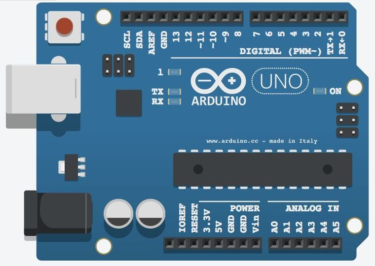
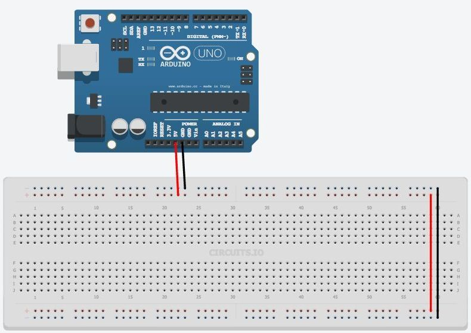
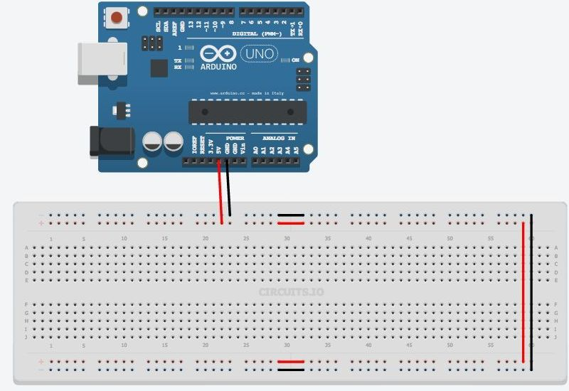
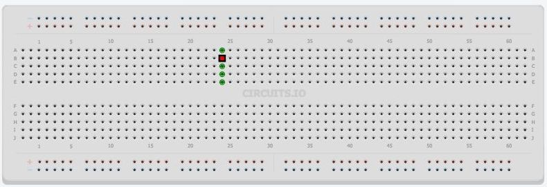

Arduino UNO для начинающих
Arduino UNO представляет собой плату с микроконтроллером, которую вы можете программировать, чтобы управлять внешними устройствами. Он взаимодействует с внешним миром через датчики, двигатели, светодиоды, динамики... и даже Интернет, что делает его гибкой платформой для разных проектов. Есть довольно много микроконтроллеров, но Arduino популярен благодаря тому, что в интернете очень активно выкладываются и обсуждаются различные проекты.
Даже если вы не имеете опыта программирования микроконтроллеров – с Arduino вы быстро научитесь и узнаете что-то об электронике с помощью экспериментов.
Что понадобится для начала?
- Arduino UNO.
- Usb кабель.
- Перемычки .
- Макетная плата.
- Красный светодиод - 4 шт.
- Резистор 220 Ом - 4шт.
- Резистор 10 ком.
- Кнопка без фиксации.
- Потенциометр.
- RGB светодиод с общим катодом.
Для демонстрации и симуляции электрических цепей можно использовать онлайн симулятор 123D circuits. Этот симулятор лучше всего работает в браузере Chrome
Arduino Uno это небольшой компьютер, к которому могут подключаться внешние цепи. В Arduino Uno используется Atmega 328P. Это самый большой чип на плате. Этот чип выполняет программы, которые хранятся в его памяти. Вы можете загрузить программу через USB-порт с помощью Arduino IDE. USB-порт также обеспечивает питание Arduino Uno.
Есть отдельный разъём питания. На плате есть два вывода обозначенные 5v и 3.3v, которые нужны для того, чтобы запитывать различные устройства. Так же вы найдете контакты, помеченные как GND, это выводы земли (земля это 0В). Платформа Arduino, так же, имеет 14 цифровых выводов (пинов), помеченных цифрами от 0 до 13, которые подключаются к внешним узлам и имеют два состояния высокое или низкое (включено или выключено). Эти контакты могут работать как выходы или как входы, т.е. они могут либо передавать какие-то данные и управлять внешними устройствами, либо получать данные с устройств. Следующие выводы на плате обозначены А0-А5. Это аналоговые входы, которые могут принимать данные с различных датчиков. Это особенно удобно, когда вам надо измерить некий диапазон, например температуру. У аналоговых входов есть дополнительные функции, которые можно задействовать отдельно.

Рис. 1 - Arduino Uno
Использование макетной платы
Макетная плата нужна для того чтобы временно соединить детали, проверить, как работает устройство, до того как вы спаяете все вместе.Все нижеследующие примеры собраны на макетной плате, чтобы можно было быстро вносить изменения в схему и повторно использовать детали.
{kind=link}
В макетной плате есть ряды отверстий, в которые вы можете вставлять детали и провода. Некоторые из этих отверстий электрически соединены друг с другом.
Два верхних и нижних ряда соединены порядно вдоль всей платы (рис. 2). Эти ряды используются, чтобы подавать питание на схему. Это может быть 5 В или 3,3 В, но в любом случае, первое, что вам надо сделать - это подключить 5 В и GND на макетную плату, как показано на рисунке 3.

Рис. 3 - Подключение питания
Иногда эти соединения рядов могут прерываться посередине платы, тогда, если вам понадобится, вы можете их соединить, как показано на рисунке 4.

Рис. 4 - Соединение шин питания
Остальные отверстия, расположенные в середине платы, группируются по пять отверстий. Они используется для соединения деталей схемы (рис. 5).

Рис. 5 - Контакты для соединения деталей схемы